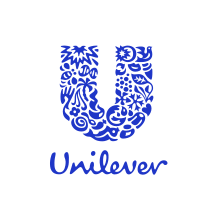
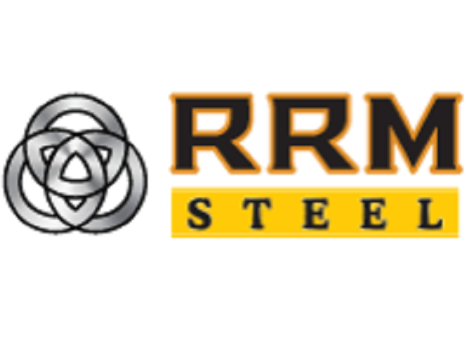
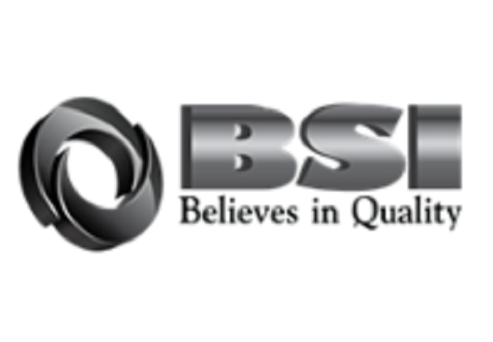

EXPERIENCE
Professional Experience
Uniper is a leading international energy company headquartered in Düsseldorf, Germany, playing a key role in securing energy supply across Europe. Uniper focuses on reliable power generation, energy trading, and the transformation toward a low-carbon energy system, with strong investments in hydrogen, renewables, and energy storage.

Unilever Pureit Bangaldesh, a part of Unilever Bangladeshs' Home Care brand, with a goal to ensure safe drinking water for everyone. With the motto of Consumer First, it's the market leader in it's segment.

A game development initiative, focused on creating game-based simulation game to help youth educate in different aspects of life.
Bashundhara Gold Refinery Limited (BGRL), a sister concern of Bashundhara Group. Bashundhara Group believes in serving the people and the country; not only in doing business and making profit. It had come into existence with that belief and adopted ‘For the People, For the Country’ as its core theme.

The Rani Re-Rolling Mills Ltd. (RRM) is imbued with a forward looking vision to acquire a global perspective and become a first rate business conglomerate. RRM has a track record in manufacturing of mild steel structural Re-bars and Wire products in Bangladesh for decades.

Bandar Steel Industries Limited is one of the most sparkling limited company in the steel sector of Bangladesh. Our key product is MS billets and deformed MS bars which are mandatory for constructional purposes.
OTHER
Other Experience

An Indie Game Development, focused on creating and producing high-quality originals. Specialised in making 2D games.